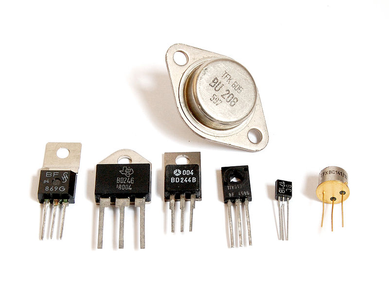

1.5.1. Общие сведения о транзисторах
Транзи́стор (англ. transistor) — электронный прибор из полупроводникового материала, обычно с тремя выводами, позволяющий входным сигналам управлять током в электрической цепи. Обычно используется для усиления, генерирования и преобразования электрических сигналов.
Управление током в выходной цепи осуществляется за счёт изменения входного напряжения или тока. Небольшое изменение входных величин может приводить к существенно большему изменению выходного напряжения и тока. Это усилительное свойство транзисторов используется в аналоговой технике (аналоговые ТВ, радио, связь и т. п.).
В настоящее время в аналоговой технике доминируют биполярные транзисторы (БТ) (международный термин — BJT, bipolar junction transistor). Другой важнейшей отраслью электроники является цифровая техника (логика, память, процессоры, компьютеры, цифровая связь и т. п.), где, напротив, биполярные транзисторы почти полностью вытеснены полевыми.
Вся современная цифровая техника построена, в основном, на полевых МОП (металл-оксид-полупроводник) - транзисторах (МОПТ), как более экономичных, по сравнению с БТ, элементах. Иногда их называют МДП (металл-диэлектрик-полупроводник) - транзисторы. Международный термин — MOSFET (metal-oxide-semiconductor field effect transistor). Транзисторы изготавливаются в рамках интегральной технологии на одном кремниевом кристалле (чипе) и составляют элементарный «кирпичик» для построения микросхем логики, памяти, процессора и т. п. Размеры современных МОПТ составляют от 90 до 25 нм. В настоящее время на одном современном кристалле площадью 1–2 см² могут разместиться несколько (пока единицы) миллиардов МОПТ. На протяжении 60 лет происходит уменьшение размеров (миниатюризация) МОПТ и увеличение их количества на одном чипе (степень интеграции), в ближайшие годы ожидается дальнейшее увеличение степени интеграции транзисторов на чипе. Уменьшение размеров МОПТ приводит также к повышению быстродействия процессоров, снижению энергопотребления и тепловыделения.
 Первые патенты на принцип работы полевых транзисторов были зарегистрированы в Германии в 1928 году (в Канаде, 22 октября 1925 года) на имя австро-венгерского физика Юлия Эдгара Лилиенфельда. В 1934 году немецкий физик Оскар Хейл запатентовал полевой транзистор. Полевые транзисторы (в частности, МОП-транзисторы) основаны на простом электростатическом эффекте поля, по физике они существенно проще биполярных транзисторов, и поэтому они придуманы и запатентованы задолго до биполярных транзисторов. Тем не менее, первый МОП-транзистор, составляющий основу современной компьютерной индустрии, был изготовлен позже биполярного транзистора, в 1960 году. Только в 90-х годах XX века МОП-технология стала доминировать над биполярной.
Первые патенты на принцип работы полевых транзисторов были зарегистрированы в Германии в 1928 году (в Канаде, 22 октября 1925 года) на имя австро-венгерского физика Юлия Эдгара Лилиенфельда. В 1934 году немецкий физик Оскар Хейл запатентовал полевой транзистор. Полевые транзисторы (в частности, МОП-транзисторы) основаны на простом электростатическом эффекте поля, по физике они существенно проще биполярных транзисторов, и поэтому они придуманы и запатентованы задолго до биполярных транзисторов. Тем не менее, первый МОП-транзистор, составляющий основу современной компьютерной индустрии, был изготовлен позже биполярного транзистора, в 1960 году. Только в 90-х годах XX века МОП-технология стала доминировать над биполярной.
В 1947 году Уильям Шокли, Джон Бардин и Уолтер Браттейн в лабораториях "Bell Labs" впервые создали действующий биполярный транзистор, продемонстрированный 16 декабря. 23 декабря состоялось официальное представление изобретения и именно эта дата считается днём изобретения транзистора. По технологии изготовления он относился к классу точечных транзисторов. В 1956 году они были награждены Нобелевской премией по физике «за исследования полупроводников и открытие транзисторного эффекта».
Позднее вакуумные лампы были заменены транзисторами в большинстве электронных устройств, совершив революцию в создании интегральных схем и компьютеров.